Há obras de arte famosas na história que tem o poder de fascinar e estimular a curiosidade das pessoas desde o momento em que ganham reconhecimento e projeção.Muitas dessas peças possuem histórias e fatos curiosos que muitas vezes não chegam ao conhecimento do grande público. Assim, selecionamos obras emblemáticas e conhecidas e trazemos algumas das curiosidades em torno delas.
1. Pietá, de Michelangelo (1498-1499)
Uma das esculturas mais famosas da história da arte é Pietá, que representa Virgem Maria com Jesus sem vida em seus braços.

A escultura pode ser vista na Basílica de São Pedro, no Vaticano, e foi produzida entre 1498 e 1499 pelo renascentista Michelangelo. Uma curiosidade que poucos sabem sobre a obra é que ela é a única que foi assinada pelo artista. Seu nome pode ser lido em uma faixa que cruza o peito de Virgem Maria, onde se lê: MICHEA[N]GELVS BONAROTVS FLORENT[INVS] FACIEBAT. A tradução da frase diz: Michelangelo Buonarroti, o florentino, fez. O artista só incluiu seu nome depois que a peça já havia sido entregue. A assinatura ocorreu em um momento de raiva, pois estavam correndo boatos de que a autoria seria de outra pessoa, devido à pouca idade de Michelangelo. Assim, para esclarecer as dúvidas, o gênio decidiu marcar seu nome na escultura, marcando-o também na história.
2. Mona Lisa, de Da Vinci (1503-1506)
A pintura mais famosa do mundo é também uma das obras com mais fatos curiosos e mistérios. Mona Lisa (La Gioconda, em italiano) é um pequeno quadro de 77 x 53 cm que está localizado no Museu do Louvre, em Paris.
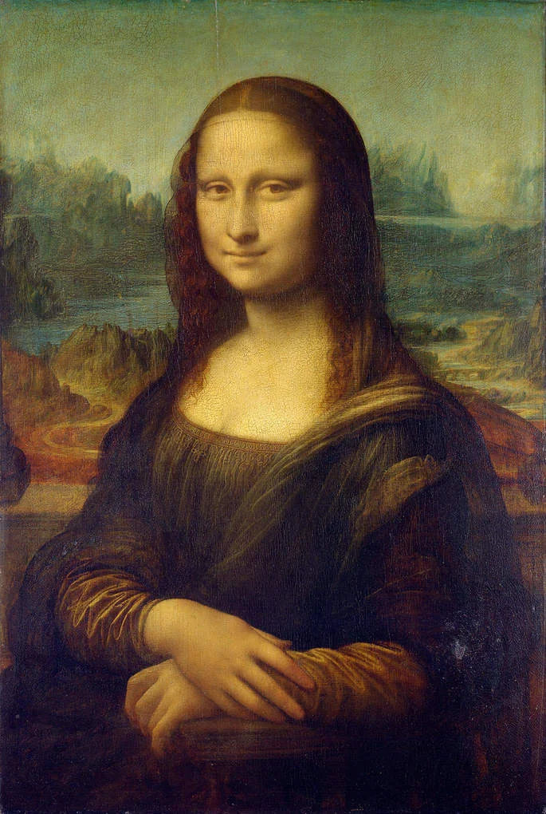Pintado por Leonardo Da Vinci entre 1503 e 1506, esse óleo sobre madeira exibe o retrato de uma mulher jovem com olhar e sorriso enigmáticos.
Em 2015 foram feitos estudos com alta tecnologia para verificar as diversas camadas de tinta e constatou-se que existem, na verdade, quatro retratos distintos na obra, três deles ficaram escondidos atrás da Mona Lisa que hoje conhecemos.
Outra curiosidade interessante descoberta nesse mesmo estudo é que, ao contrário do que se imaginava, Da Vinci pintou cílios e sobrancelhas na retratada, mas na pintura atual não se nota.
Além disso, a tela já foi roubada no começo do século XX, em 1911. Na ocasião se suspeitou do pintor Pablo Picasso, mas depois se soube que um ex-funcionário havia retirado a obra do museu e tentado vendê-la. Assim, se recuperou a tela.
São muitas as especulações e histórias que rondam a Mona Lisa, o que contribui ainda mais para sua fama.
3. O grito, de Munch (1893)
O Grito é uma daquelas obras de arte que se tornam ícone de um momento histórico e, mais do que isso, traduzem um tipo muito específico de sentimento: a angústia.
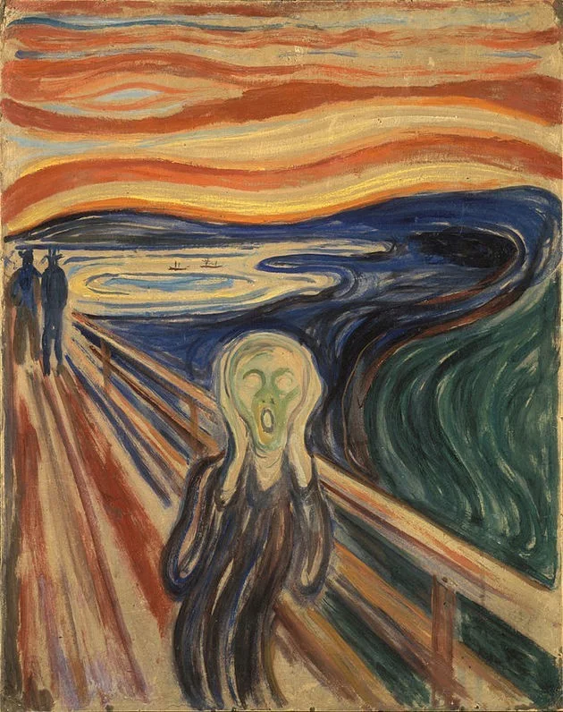Pintada pelo norueguês Edward Munch em 1893, a obra possui 4 versões.
Especialistas afirmam que a figura aterrorizada que vemos no centro da imagem teve como inspiração uma múmia peruana presente em uma exposição de 1850 em Paris.
A tela também foi furtada da Galeria Nacional de Oslo, na Noruega. O roubo ocorreu em 1994 e os ladrões tiveram a ousadia de deixar um bilhete no local agradecendo pela falta de segurança. No ano seguinte a obra foi recuperada e a segurança da galeria reforçada.
4. Moça com brinco de pérola, de Vermer (1665)
A obra mais conhecida do holandês Johannes Vermeer é Moça com brinco de pérola, de 1665.
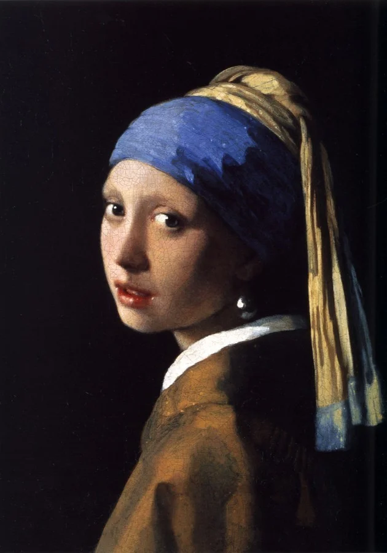Sua fama é enorme e a pintura ganhou os cinemas em 2003 com um filme que conta de forma ficcional como foi o processo de criação da tela e a relação do pintor com a modelo.
Mas na realidade pouco se sabe sobre o assunto, apenas que a musa inspiradora era uma jovem retratada com serenidade e certa sensualidade, observada em seus lábios entreabertos.
A joia pendurada em sua orelha ganha destaque na tela ao revelar um brilho parecido com o que está presente nos lábios e nos olhos.
É curioso também observar que, em realidade, o pintor não inseriu na imagem um gancho que ligue a pérola ao lóbulo da orelha da jovem.
Assim, o brinco ganha uma característica sobrenatural, como se fosse uma esfera brilhante pairando no ar. Podemos inclusive comparar o adereço ao próprio planeta flutuando no espaço.
A pintura é tão icônica que é comparada à Mona Lisa, ganhando status de “Mona Lisa holandesa”.
5. O pensador, de Rodin (1917)
A escultura O pensador, do francês Auguste Rodin, é uma das grandes obras do século XX.
Finalizada em 1917, foi criada inicialmente para compor A porta do Inferno, uma obra que integra várias esculturas e foi feita em homenagem ao poema de Dante Alighieri: A Divina Comédia.
Com o sucesso dessa escultura especificamente, foram feitas novas versões. Ao todo, o escultor realizou uma dezena de “novos pensadores”.
O nome inicial seria O poeta, em referência à Alighieri, mas como a figura retratada não condizia com a do escritor, mudou-se para O pensador.
O artista tinha consciência da genialidade de sua obra e chegou a afirmar: O que pensa o meu pensador é que ele pensa não só com o cérebro, com as sobrancelhas, as narinas distendidas e os lábios comprimidos, mas com cada músculo de seus braços, costas e pernas, com o punho cerrado e o aperto dos dedos do pé.
6. Abaporu, de Tarsila do Amaral (1928)
Quando se fala em uma pintura famosa brasileira, quase todos se lembram de Abaporu, de Tarsila do Amaral.
Ícone da primeira fase do modernismo no Brasil, a tela foi concebida em 1928 e foi oferecida por Tarsila ao seu marido Oswald de Andrade como um presente.
Comparando a pintura à escultura O pensador, vemos a evidente semelhança na posição corporal das figuras. Por isso, associa-se as duas obras, como se Abaporu fosse uma espécie de “releitura” da escultura de Rodin.
Por outro lado, a neta da artista afirmou em entrevista em 2019 que na casa de Tarsila havia um grande espelho inclinado. Assim, a figura desproporcional exibida seria um autorretrato da artista, que se posicionou em frente ao espelho e observou os pés e mãos enormes, em detrimento da cabeça.
De qualquer forma, a tela se tornou um símbolo do “antropofagismo”, movimento que pretendia valorizar a cultura brasileira.
A pintura é uma das mais caras da história e sem dúvida um marco na cultura brasileira, sendo avaliada em 45 a 200 milhões de dólares.
7. A persistência da memória, de Salvador Dalí (1931)
A célebre tela surrealista A persistência da memória, do espanhol Salvador Dalí, exibe a imagem absurda de relógios derretendo, formigas e moscas, um corpo sem forma e uma insólita paisagem ao fundo.
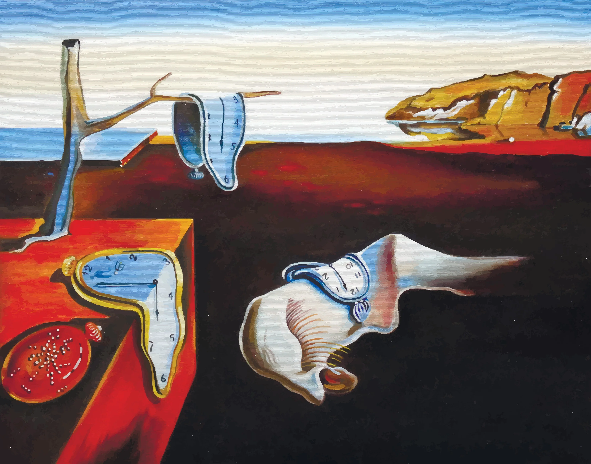Com dimensões reduzidas (24 x 33 cm), foi criada em 1931 em apenas cinco horas durante uma catarse criativa do artista.
Conta-se que Dalí havia comido queijo camembert naquele dia e estava indisposto. Enquanto sua esposa se divertia com amigos, o artista decidiu ficar em casa.
Ao se isolar no ateliê concebeu a pintura que se tornou uma das mais importantes do movimento das vanguardas europeias.
8. Maman, de Bourgeois
A artista francesa Louise Bourgeois fez diversas esculturas de aranhas a partir dos anos 90. Uma delas é conhecida do público brasileiro por permanecer durante muitos anos no Parque Ibirapuera, integrando o acervo do MAM (Museu de Arte Moderna de São Paulo).

As famosas aranhas são importantes na obra de Bourgeois, pois estão relacionadas à sua infância e às lembranças da loja de restauração de tapeçarias de seus pais.
Além disso, simbolizam sua mãe. A artista descreveu sua mãe da seguinte maneira: “Ela foi deliberada, inteligente, paciente, calmante, razoável, delicada, sutil, indispensável, pura e tão útil quanto uma aranha”.
Foram realizadas várias versões de aranhas, que levam o nome de Maman, que significa “mãe”.
9. Vênus de Milo (aproximadamente século II a.C)
Considerada símbolo da arte grega clássica, a escultura Vênus de Milo foi encontrada por Yorgos Kentrotas, um camponês grego, em 1820 na ilha de Milos, no mar Egeu.
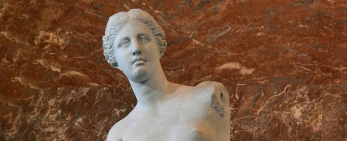Na ocasião estava também o marinheiro francês Olivier Voutier, que incentivou Yorgos a desenterrar a peça.
Nas escavações foram encontrados ainda outros fragmentos, como uma mão segurando uma maçã e dois pilares com bustos masculinos.
Depois de negociações, a obra ficou em posse dos franceses e atualmente integra o Museu do Louvre, em Paris.
A França vivia naquele período a revalorização da cultura clássica grega e houve entusiasmo com a aquisição de tal relíquia.
Na época de seu descobrimento foi encontrada em sua base a inscrição com o texto: “Alexandre, filho de Menides, cidadão de Antioquia, fez a estátua”.
Antioquia foi uma cidade turca fundada um século após o período clássico grego. Assim, Vênus de Milos não é uma escultura originalmente da Grécia Antiga.
Entretanto, os franceses ficaram muito frustrados com a possível autoria e o diretor do Museu do Louvre contratou especialistas para analisar a peça. Afirmou-se então que a base da escultura havia sido incorporada posteriormente e que a Vênus havia sido esculpida por Praxíteles, famoso escultor grego na antiguidade. A base foi descartada pelos franceses.
Mais tarde, após novos estudos, foi verificado que a escultura de fato foi uma criação de Alexandre de Menides.
A estátua foi feita em mármore, mede 2 metros de atura e pesa cerca de 1 tonelada.
10. Fonte, atribuída a Duchamp (1917)
Em 1917 foi inscrita em um salão de exposições a escultura Fonte, um mictório de porcelana assinado com o nome R. Mutt.
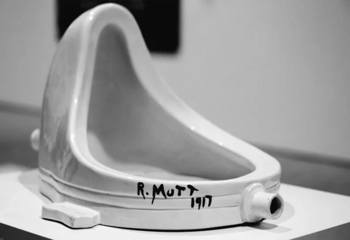A peça causou escândalo, pois questiona o que pode ou não ser elevado ao status de arte. Assim, se tornou uma das obras mais famosas e importantes do movimento dadaísta, ditando novos rumos da arte moderna e, posteriormente, da arte contemporânea.
Mas uma curiosidade que nem todos sabem é que a ideia dessa obra pode não ter sido de Marcel Duchamp, artista francês que leva a fama pela criação da peça, e sim de uma artista amiga dele, a alemã Baronesa Elsa von Freytag Loringhoven.
Essas especulações surgiram a partir de cartas do próprio Duchamp em que
afirma:
Uma das minhas amigas que adotou o pseudônimo de Richard Mutt me enviou um urinol de
porcelana como uma escultura; como não havia nada de indecente, não havia motivo para rejeitá-lo.
11. A noite estrelada, de Van Gogh (1889)
Uma das pinturas mais reproduzidas na contemporaneidade é A noite estrelada, do holandês Vincent Van Gogh.
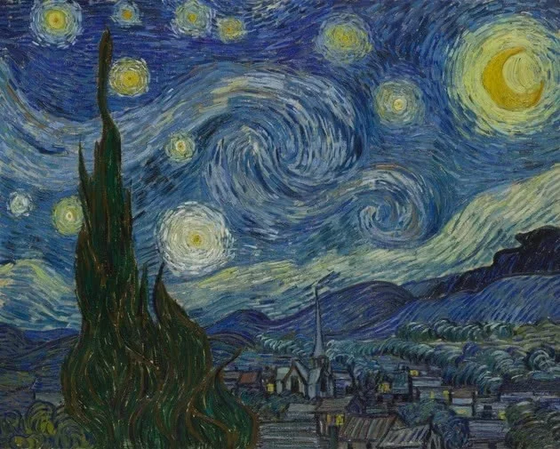Pintada em 1889, a tela de 73 x 92 cm exibe uma paisagem noturna com um enorme céu que se movimenta em espiral, sugerindo o turbilhão emocional que o artista vivenciava.
A obra foi concebida durante o tempo em que ele esteve voluntariamente no hospital psiquiátrico de Saint-Rémy-de-Provence e retrata a vista da janela de seu quarto combinada com elementos da imaginação.
Assim, o vilarejo e a pequena igreja fazem alusão à Holanda em que passou sua juventude.
Estudos sugerem que o céu representado exibe a posição exata dos astros naquele momento, demonstrando grande conhecimento de astronomia.
12. As meninas, Velásquez (1656)
A pintura As meninas, do célebre pintor espanhol Diego Velázquez, foi feita em 1656 e se encontra no Museu do Prado, em Madri.
A imagem exibe a família real do monarca Filipe IV e traz diversos elementos curiosos que conferem uma atmosfera surpreendente e original, levando o espectador a imaginar toda uma narrativa em torno dos personagens.
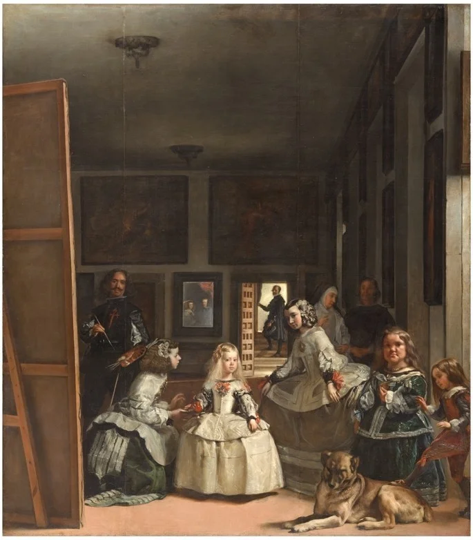É uma obra inovadora, pois trata a perspectiva de uma maneira ousada, criando um ambiente com vários planos. Além disso, traz a figura do próprio artista em um autorretrato no qual é exibido de maneira altiva, em uma busca por reconhecimento da profissão.
A cena mostra a pequena princesa Margarida ao centro junto às damas de companhia e figuras de entretenimento da corte, como o cachorro e as pessoas com deficiências ao lado direito.
O casal real é retratado em um pequeno espelho ao lado da porta.
Outra questão interessante que a tela sugere é sobre qual seria o tema da pintura de Velázquez dentro do próprio quadro.
13. O beijo, de Klimt (1908)
Uma das obras mais divulgadas mundialmente e que estampa objetos diversos na atualidade é O beijo, do austríaco Gustav Klim
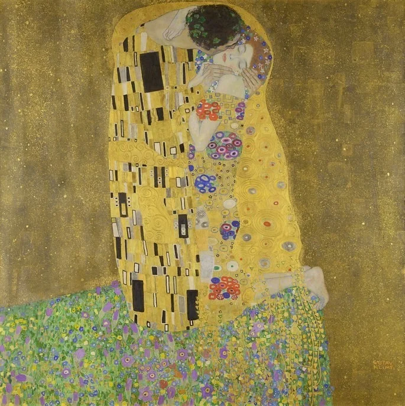Produzida em 1908, a tela retrata o amor de um casal e faz parte da chamada fase dourada do artista, que utilizou folhas de ouro como um dos materiais.
Na imagem vemos que o manto que cobre as figuras apresenta formas circulares, retangulares e pequenos pontos de cores diversas.
A inspiração para tal padronização veio de imagens de plaquetas sanguíneas, estudadas em microscópio na época, quando os cientistas estavam fascinados com as descobertas no novo aparelho.
Anos antes da criação da tela, o artista já havia realizado obras inspiradas em temas da medicina.
Assim, é possível identificar um desejo de Klimt de unir o tema romântico com a materialização do corpo humano.
14. Salvator Mundi, atribuída a Leonardo Da Vinci (cerca de 1500)
A obra mais polêmica atribuída a Da Vinci é a tela Salvator Mundi, que retrata Jesus Cristo ao estilo renascentista.
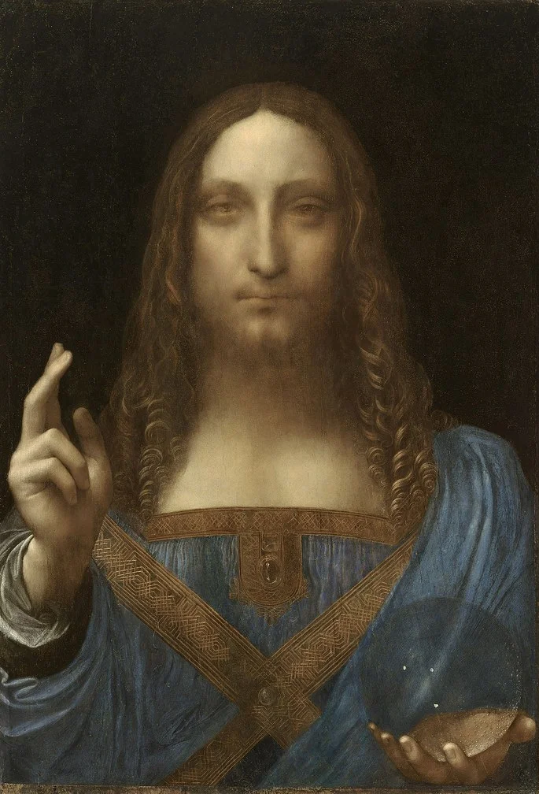Apesar de haver controvérsias sobre a autoria da pintura, essa é a obra mais cara já vendida em leilão. O valor pago pelo óleo sobre tela foi de 450 milhões de dólares em 2017.
Atualmente não se sabe exatamente onde a pintura está localizada, mas ela foi comprada por um príncipe saudita. Quando foi adquirida, a ideia era de que seria exposta no Museu do Louvre de Abu Dhabi, o que não aconteceu. Hoje especula-se que esteja em um dos barcos do príncipe.
15. O lavrador de café, de Portinari (1934)
O lavrador de café é uma pintura de Cândido Portinari de 1934. A cena traz a figura de um trabalhar do campo com sua enxada, grandes pés descalços, uma lavoura de café e um trem que corta a paisagem.
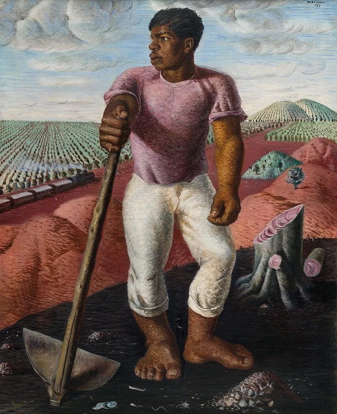É uma das mais representativas obras do famoso pintor brasileiro e contou com a colaboração do trabalhador Nilton Rodrigues, que também posou para outras telas, como Mestiço e Café.
Apesar da baixa qualidade do vídeo, vale a pena conferir um trecho da entrevista de 1980 do Globo Repórter com o ex-lavrador.
16. The Artist Is Present, de Marina Abramović (2010)
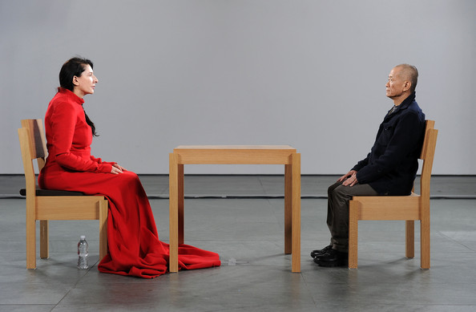Realizada em 2010 no MoMA (Museu de Arte Moderna de Nova York), a obra foi uma ação em que Marina esteve presente em uma exposição com sua trajetória artística.
Ela permaneceu sentada olhando fixamente para os visitantes, que um a um se colocavam a sua frente.
O ponto alto dessa performance e o motivo dela ter ganhado projeção foi quando seu ex-companheiro (e também artista) Ulay participa, se posicionando frente a frente com Marina.
Os dois já não tinham mais contato, mas durante 12 anos foram namorados e parceiros em diversos trabalhos. Assim, a conexão entre eles, os olhares e gestos foram registrados e emocionaram o público.
17. Série Silhuetas, de Ana Mendieta (1973-1980)
Ana Mendieta (1948–1985) foi uma importante artista cubana. Sua produção se deu sobretudo nos anos 70 e seu campo de atuação foi no body art e performance, linguagens da arte contemporânea, para trazer à tona assuntos relacionados ao feminismo
A obra mais famosa da artista foi a série Silhuetas, em que ela usa seu corpo para se integrar à natureza, buscando marcar seu corpo feminino no mundo e também uma conexão espiritual com o todo.
A curiosidade que trazemos aqui não é especificamente sobre essa série, e sim sobre a própria artista. Ana trazia fortes reflexões sobre o corpo e a violência contra a mulher e ironicamente morreu em circunstâncias duvidosas, que sugerem feminicídio.
Em 1985 a artista faleceu jovem depois de uma briga com seu marido, o artista Carl Andre. Ela caiu do 34º andar do prédio onde morava.
A morte foi registrada como suicídio, mas há fortes indícios de que Carl a tenha empurrado. O marido foi julgado 3 anos depois e absolvido.
18. A traição das imagens, de René Magritte (1928-29)
Um dos ícones do movimento surrealista foi o belga René Magritte. O pintor gostava de brincar com as imagens de modo a criar contradições e reflexões para além da simples representação figurativa.
A famosa pintura A traição das imagens exemplifica bem essa característica de seu trabalho, entrando para a história da arte como um desafio e uma provocação.
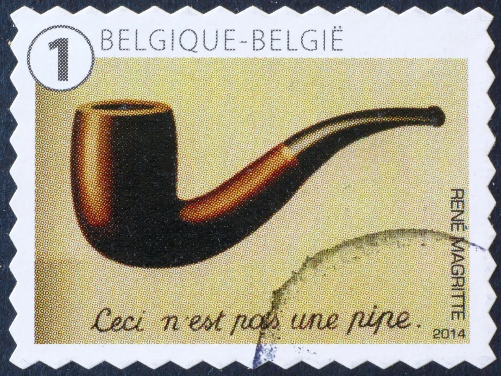Na tela vemos a pintura de um cachimbo e a frase em francês que diz "Isso não é um cachimbo". Assim, o pintor evidencia a diferença entre a representação e o objeto em si.
Pintada em 1928, a obra se encontra atualmente no Museu de Arte do Condado de Los Angeles.
Uma curiosidade é que na época em que esse trabalho foi apresentado, foi muito discutido, se tornando polêmico e mal compreendido.
19. A Grande Onda de Kanagawa, de Hokusai (1820-30)
Uma das mais famosas xilogravuras japonesas é A grande onda de Kanagawa, criada por volta de 1820 por Hokusai, mestre da técnica ukiyo-e, a estamparia japonesa.
A imagem é conhecida no mundo todo, encantando o público com os ricos detalhes e caráter dramático do mar. Mas, o curioso é que a intenção do artista foi retratar principalmente o Monte Fuji, ao fundo da paisagem.
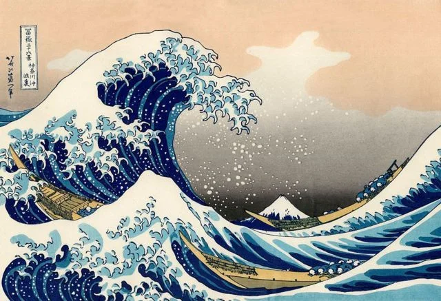A obra faz parte da série "Trinta e seis vistas do Monte Fuji", em que o monte é exibido em diversos momentos do ano e visto de lugares distintos.
No final do século XIX a arte japonesa se tornou popular no Ocidente. Essa obra, da qual foram feitas muitas cópias, se tornou conhecida por colecionadores europeus e muitos museus abrigaram reproduções do trabalho.
Assim, a xilogravura japonesa - e essa em destaque - passou a ser fonte de inspiração para artistas europeus, contribuindo nas obras de Van Gogh, Monet, Klimt, Mary Cassat e muitos outros.
20. O homem amarelo, de Anita Malfatti (1915)
Em 1917, portanto 5 anos antes da Semana de Arte Moderna, Anita Malfatti realizou uma exposição no Brasil exibindo sua produção enquanto esteve estudando fora.
O homem amarelo fez parte dessa exposição e também da Semana de 22, sendo uma de suas obras de maior impacto.
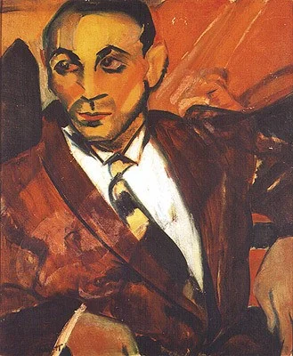As formas e cores utilizadas pela artista nesse trabalho causaram polêmica em um momento em que a arte moderna ainda estava chegando ao país.
O homem representando por Anita é, segundo ela, a imagem de um imigrante italiano pobre que exibe um olhar de desamparo.